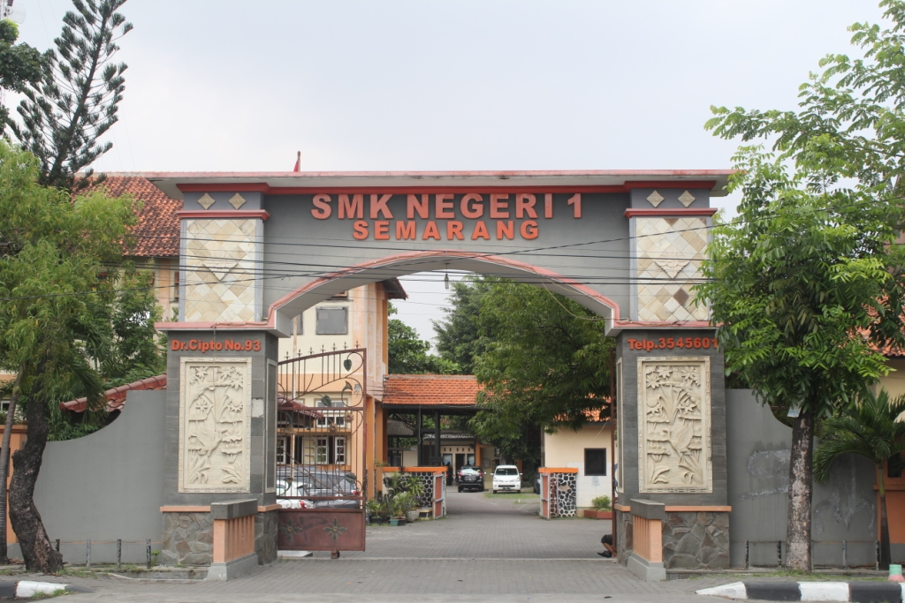
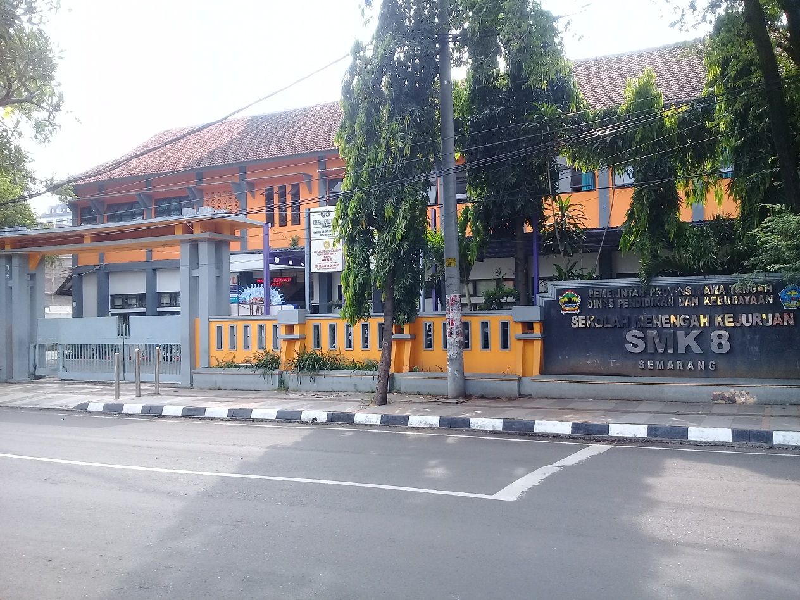
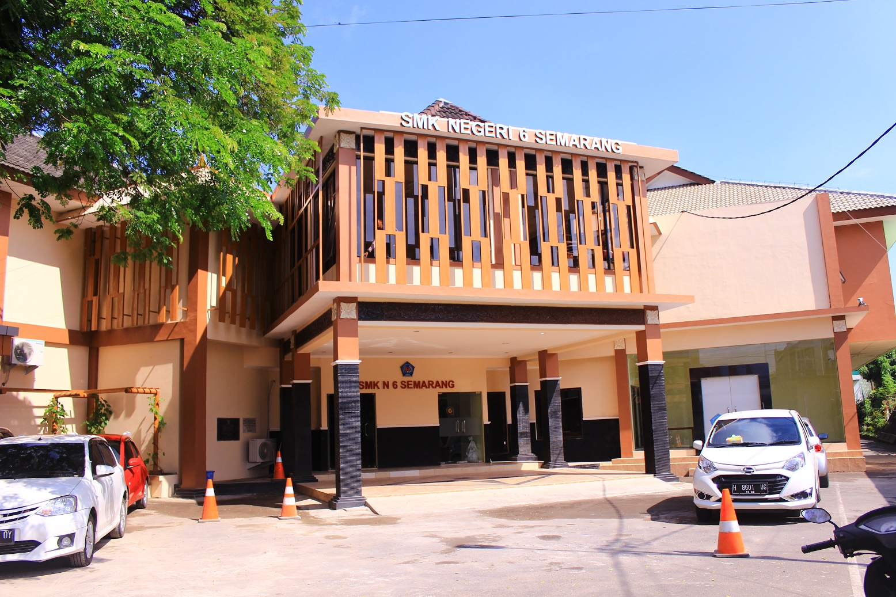

Sistem Informasi & Geografis (SIG) sendiri diantaranya adalah sistem komputer yang digunakan untuk mengintegrasi, mengumpulkan, memeriksa, dan menganalisis informasi-informasi yang berhubungan dengan permukaan bumi.
Beberapa waktu terakhir minat masyarakat terhadap jenjang Sekolah Menengah Kujuruan (SMK) cukup tinggi. SMK merupakan jenjang pendidikan menengah atas yang mampu mempersiapkan siswa untuk mandiri ataupun melanjutkan ke jenjang pendidikan atas. Hal ini disebabkan karena SMK mengutamakan pengembangan kemampuan siswa untuk melaksanakan jenis pekerjaan tertentu (Peraturan Pemerintah, 1990).
Beberapa masalah yang dihadapi oleh masyarakat adalah penyebaran lokasi SMK yang belum merata di setiap kecamatan, ketidakjelasan informasi mengenai jurusan yang diminati atau pun sarana dan prasarana yang dimiliki oleh sekolah yang bersangkutan. Dengan pemetaan ini informasi tersampaikan secara cepat dan tepat, sehingga akan memudahkan dalam pengambilan kebijaksanaan untuk pengembangan mutu pendidikan.
Penggunaan WebGIS berupa peta dan atribut suatu SMK di Kota Semarang dalam satu aplikasi merupakan cara paling efektif dalam usaha pengembangan mutu pendidikan kota Semarang. QGIS adalah sistem informasi khusus yang mengelola data yang memiliki informasi spasial. yang juga merupakan sejenis perangkat lunak yang dapat digunakan untuk melakukan pengaturan dan memperlihatkan data secara tepat, menggabungkannya dengan data lain, melakukan analisis terhadap data, dan menghasilkan data baru yang berguna, yang pada gilirannya QGIS dapat membantu untuk pengambilan keputusan.Tujuan khusus pada pemetaan SMK ini agar masyarakat yang akan bersekolah SMK di Kota Semarang mengetahui apakah ada sekolahan SMK di daerah yang ada ditempat tinggalnya.